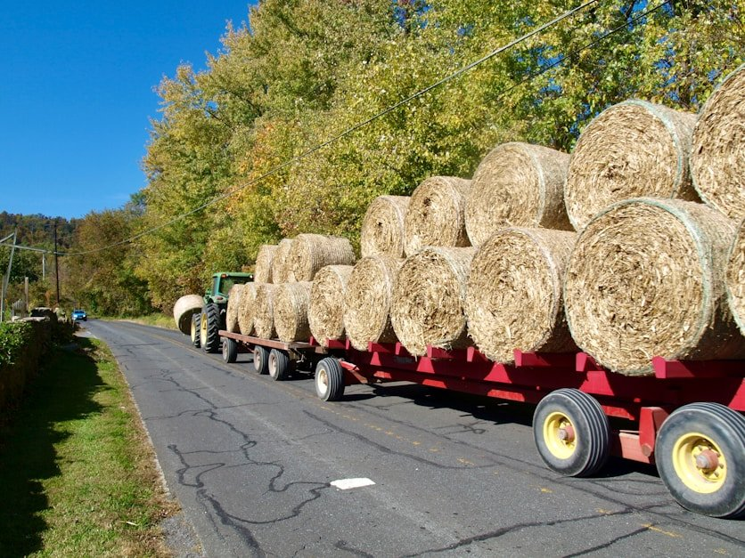
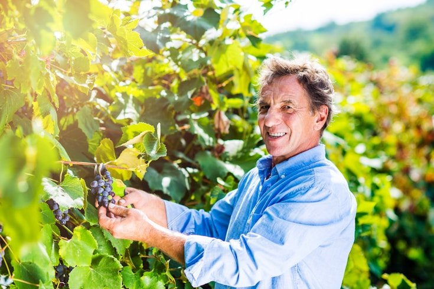
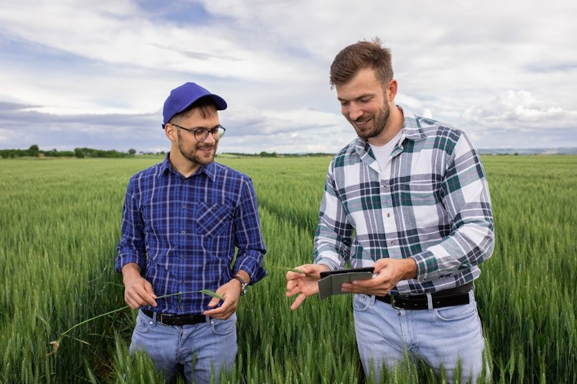

About Fruit fly
SARDI is the state’s primary industries research provider and collaborates with key industries, primary producers, research institutions and other organisations.
SARDI applied science plays a key role in advancing the productivity, quality, competitiveness, and long-term sustainability of the state’s primary industries. This work addresses the challenges faced by many primary producers now and into the future.
SARDI has delivered applied science that has grown South Australia’s primary industries for over 30 years.
Explore our research projects
Snapper Recovery: Restoring our fisheries
Helping South Australia's snapper populations recover through sustainable management, research, and conservation efforts. This program aims to restore fish stocks, support ecosystems, and ensure a thriving future for fisheries.
Innovating commercial biscuits
Exploring the science behind creating high-quality commercial biscuits, focusing on ingredient selection, formulation, and production techniques.
Ensuring food safety & health in pig production
Promoting best practices in pig production to ensure food safety, animal health, and biosecurity.
Developing drought-resistant wheat
Enhancing wheat varieties to withstand drought conditions, ensuring food security and sustainability in changing climates. This research focuses on improving resilience, yield, and adaptability for long-term agricultural success.
Latest SARDI news
-

Cutting edge research helping farmers on the Eyre Peninsula
The delivery of more than 100 truckloads of donated hay to farming communities across South Australia, as a result of financial support…
-

AgTech solutions on show in the Barossa and Loxton to support local agriculture
Latest AgTech for vineyards and orchards on show at the Nuriootpa and Loxton Research Centre.
-

Cutting edge research helping farmers on the Eyre Peninsula
Cutting edge research helping farmers on the Eyre Peninsula.
-
Nominations open for Green Globe Awards 2019
The annual awards will recognise individuals and organisations for their leadership , commitment and innovation in sustainability across NSW.
-
Quality green spaces and a million more trees for NSW
The NSW Government will create more quality green spaces and increase ther tree canopy in Sydney bt 2022.
Strategic Plan For The Future
SARDI's evolutionary pathway involves delivering innovation through collaboration.
The strategic plan outlines the vision, mission, strengths, and opportunities that will guide us over the next 5 years. It forms the framework to achieve SARDI's mandate as a key economic development asset for the state.